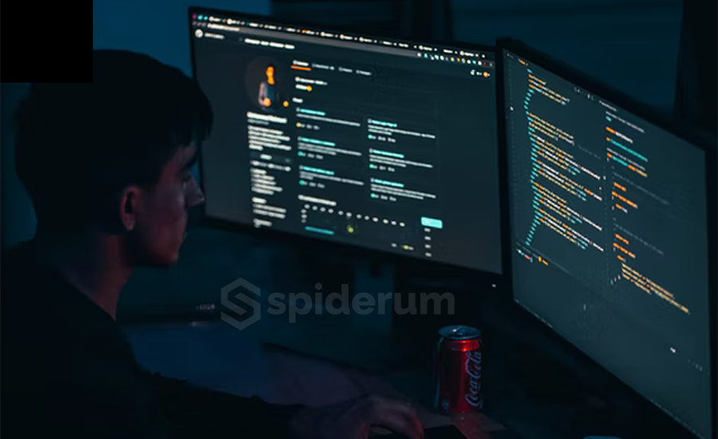
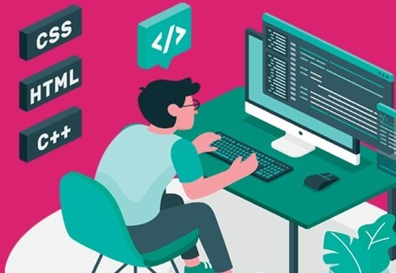

Frontendの仕事概要は
 フロントエンドデベロッパーの仕事内容は、バックエンドデベロッパーが用意したサーバー上で動く Webサイトを構築することです。バックエンドデベロッパーについては後述します。
Webページを構築する際、HTML、CSS、Javascriptなどのコーティング知識が必要不可欠なため、 先ほど挙げたスキルが重宝されています。また、デザインのことについても精通していた方がいいので、 デザインについての記事なども日頃から読んでいるといいでしょう。
Frontend Developerを選んだ理由
 1) 専門学校1年生の時にプログラム言語3つ(HTML,CSS,Javascript)を勉強するきっかけフロントエンドに興味を持つ。
1) 専門学校1年生の時にプログラム言語3つ(HTML,CSS,Javascript)を勉強するきっかけフロントエンドに興味を持つ。
2) 専門学校でもデザインに関する授業が多いのでデザインできるプログラマーになれる。
3) Web開発の基本を身につけたい人に紹介したい。
4) Frontend Developerの年収。
Frontend Developerの年収
 求人ボックス調べによると、フロントエンドエンジニアの年収は約600万円です。
求人ボックス調べによると、フロントエンドエンジニアの年収は約600万円です。
ITエンジニアの平均年収が483万円（求人ボックス調べ）なので、エンジニアの中でも給与水準は高め。今後収入を伸ばしたい人にはおすすめの職業と言えます。
Frontend Developerに必要なスキル
 1) フロントエンドデベロッパーに必要な言語:HTML,CSS,Javascript。
2) フロントエンドデベロッパーが習得するべき3つのフレームワーク・ライブラリ:JQuery,React.js,Vue.js。
3) フロントエンドデベロッパーに必要な開発環境3選:Git,GitHub,タスクランナー。
4) フロントエンドデベロッパーが開発以外で身に付けたい5つのスキル:UI/UX設計,CMS構築,サーバーサイドの言語と知識,SEOに関する知識,各デバイスの違い。